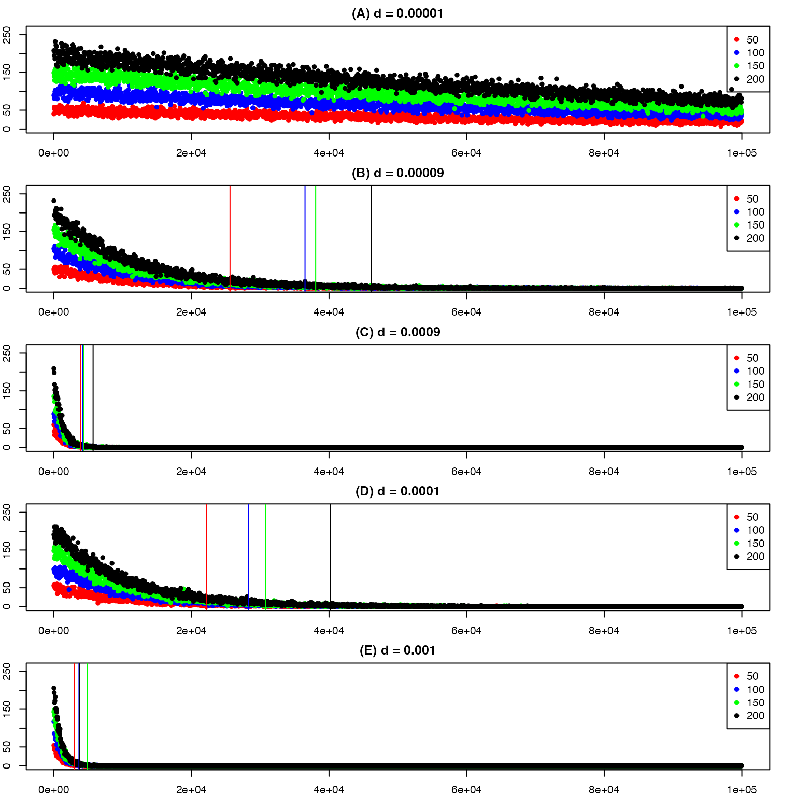
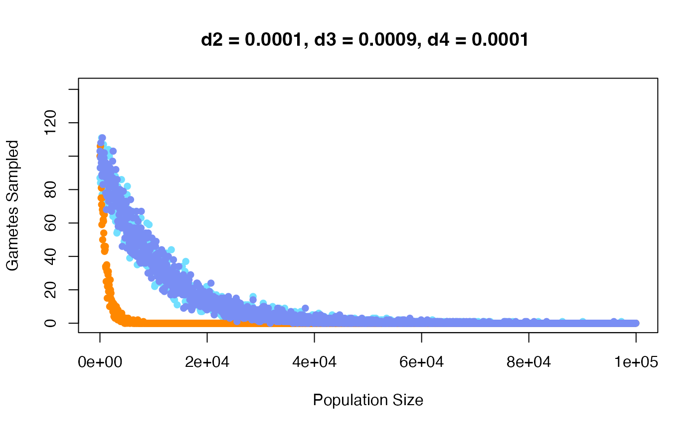

Here we describe the parameters associated with reproduction and how these parameters may influence our model. We can split reproduction into two parts:
- Gamete Formation
- Gamete Union
Table 1: Summary of model parameters associated with reproduction.
| In-text | In-code | Definition |
|---|---|---|
| \(\color{green}{\lambda_{i}}\) | \(\color{green}{gnum.base}\) | Mean number of gametes per individual per cytotype. |
| \(\color{green}{d}\) | \(\color{green}{d}\) | Strength of density dependency on gamete production for each cytotype. |
| \(\color{green}{density.type}\) | Sets type of density dependency utilized when defining number of gametes per individual. Options: “all” or “like-cytotype”. | |
| \(\color{green}{b}\) | \(\color{green}{b}\) | Proportion of unreduced gamete formed by each diploid and tetraploid individual. |
| \(\color{green}{v}\) | \(\color{green}{cc}\) | Proportion of 3n gamete formation from each triploid individual. |
| \(\color{green}{s}\) | \(\color{green}{s}\) | Selfing rate. |
| \(\color{green}{mc}\) | \(\color{green}{mc}\) | Strength of mating choice. |
| \(\color{green}{mate.lazy}\) | Prevents selfing from occurring during outcrossing. |
Gamete Formation
Number of Gametes Produced
The number of gametes per individual of each cytotype at each time step (\(X_{i}(t)\)) is determined based on the base number of gametes per individual (\(gnum.base\)) and the strength of density dependency (\(d\)).
\[X_{i}(t) \sim {\rm Poisson} \left(gnum*\exp\left\{-d_{i}\sum_{i=2}^4\sum_{j=1}^{2}c_{i,j}(t)\right\} \right)\]
where \(c_{i,j}\) indicates the total number of individuals of each cytotype (i = {2, 3, 4}) and each life stage (j = {1,2}).
Here we inspect the number of gametes expected for populations between 10 to 100,000 individuals. We see that minimum population size where 0 gametes are sampled (indicated by colored lines) among the different \(gnum.base\) values decreases with increased \(d\) values. We also observe that at larger values of \(d\) there is a decrease in distance among the minimum population size with 0 gametes sampled for the different \(gnum.base\) values. Due to the dynamics revealed in Figure 1, we decided to vary the strength of density dependence, rather than the base number of gametes produced (see Figure 2).
Figure 1: Expected number of gametes sampled for d values (A - E) with color indicating gnum.base (or number of gametes produced by each individual). The color lines indicate the population size where 0 gametes sampled is first seen for each set gamete value.
Figure 2: Number of gametes sampled for diploids (blue), triploids (orange), and tetraploids (purple) when each d value (strength of density dependence) is specified for each cytotype, but gnum (or number of gametes produced by each individual) is set to 100 for each.
Types of Gametes Produced
The current model allows all cytotypes to produce reduced and unreduced gametes at rates set by \(b\) and \(cc\) (or \(v\)). Of the gametes produced, not all are viable. Diploids produce 1n and 2n gametes, both of which are viable. Triploids only produce viable gametes of 3n, with nonviable 1n and 2n gametes. Autotetraploids produce only viable 2n gametes.
Figure 3: Gametes produced by each cytotype. Here gam.vec indicates the \(X_{i}\) at a time step, b is the rate of unreduced gamete formation, v is the proportion triploid gametes that will be viable (cc), and \(c_{i,j}\) is the total number of the ith cytotype that is reproductively mature (j=2) at time t. This figure is Figure A1 in Gaynor et al. 2023.
Gamete Union
The remaining parameters are associated with selfing rate (\(s\)) and mating choice (\(mc\)).
Figure 4: Figure A1 in Gaynor et al. 2023. This is a visual display of reproduction including gamete formation (\(gam.vec\), \(b\), and \(v\)) and the union of gametes via selfing or outcrossing (\(s\) and \(mc\)). The number of gametes of each type is calculated based on the number of mature individuals of each cytotype (\(c_{2,2}, c_{3,2}, c_{4,2}\)), the number of gametes produced by each individual (\(gam.vec\)), the frequency of unreduced gamete formation (\(b\)), and the proportion triploid gametes that will be viable (\(v\), or \(cc\)). After gamete formation, selfing will occur based on a defined selfing rate (\(s\)), the remaining gametes will outcross. Of these outcrossing gametes, a proportion will only pair with gametes produced by like-cytotypes indicated by mating choice (\(mc\)), the remainder will freely pair in a outcrossing pool.
Lazy Mating
Note, we included a parameter called ‘mate.lazy’ which can be equal to TRUE or FALSE. When FALSE, this prevents selfing from occurring during outcrossing. Since preventing union of gametes produced by the same individual increases computational time by 31x, we provide a function without this feature. We do not recommend lazy mating.